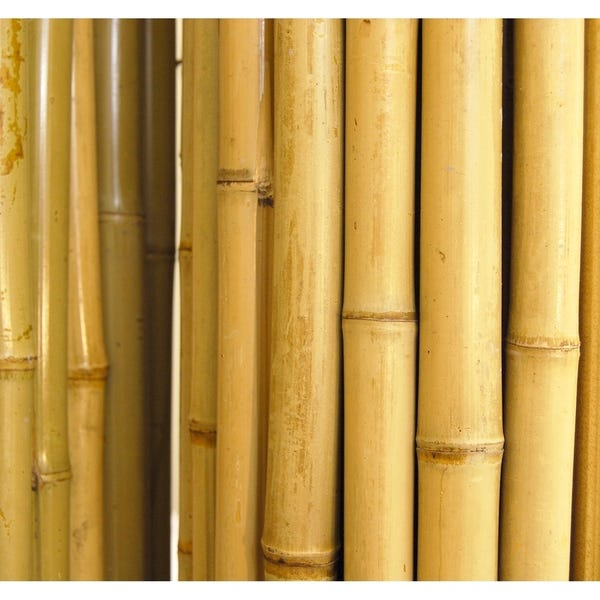
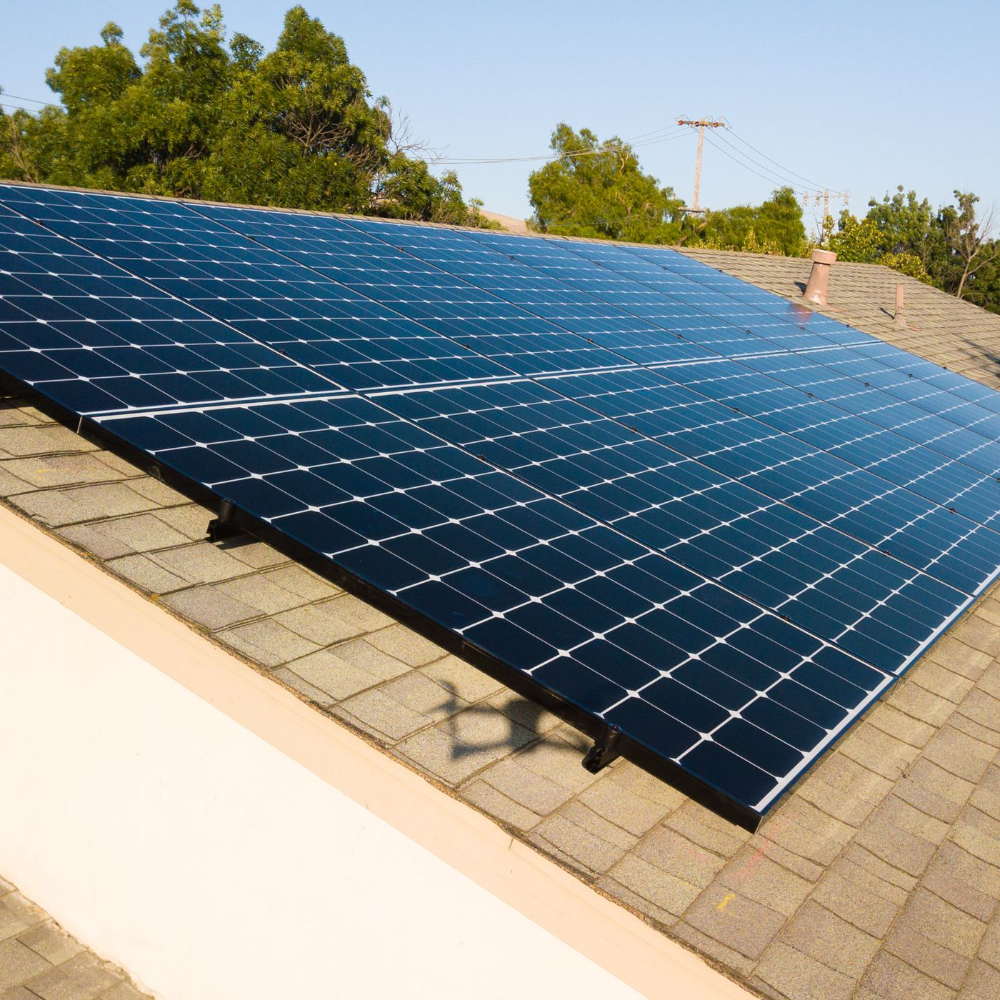
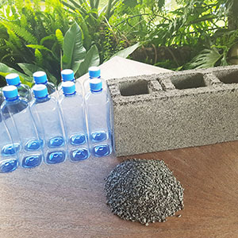
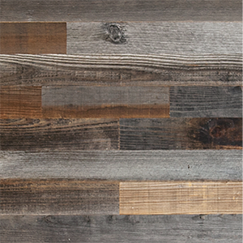

How can we use a limited amount of space efficiently in order to fulfill all the needs of a smart city, without causing traffic and congestion during its construction?
The inspiration is based on the housing crisis in Toronto. Many people struggle with affordable housing, often compromising their quality of living with reduced space. Our team believes in being environmentally responsible. Modules are constructed using sustainable materials and renewable resources; construction is off-site and waste is minimal as they’re made precisely to order. Using sustainable and locally sourced materials, it’ll decrease the cost of equipment and supplies, while fulfilling the price range of a potential owner's expectations. Modular building ensures flexibility whether it’s transporting to another site or allowing the individual to freely design their own concept.
Environmental Benefits
Modules are constructed using recycled materials and renewable resources such as bamboo, as well as parts from other modules that are not currently being used, as they can be reused into different modules. The modules produce a small amount of construction waste as they are made precisely to order. There is also less onsite disturbance, making construction in sensitive areas possible, without damaging the ecosystem it’s in. We have implemented photovoltaic glass (PV glass) windows to reduce heating and cooling consumption. Solar panels are installed on the roof of the entire structure to generate energy to each module.
-

Bamboo
-

Solar Panels
-

Recycled Plastics
-

Reclaimed Wood
Labour and Materials
Modular building provides labour and material benefits as well as being environmental friendly. Modules are built off site, using precise construction techniques, ensuring that the exact amount of materials are used without waste. Less concrete is used on site and the modules get set up quickly, keeping labour costs down by finishing building quickly.
Cost Effective Materials
Modules are constructed using sustainable materials and renewable resources as it’ll decrease the cost of equipment and supplies. Recycled plastic bottles can be made into paneled walls or bricks. Since plastic is so durable, it can withstand strong weather. Bamboo is a highly renewable resource, it grows fast and is highly durable and resilient. It has been used in many countries for centuries. Upcycling with reclaimed wood can add beautiful pieces to your module or even as an exposed or hidden wall.
Less Labour Intensive
As the modules are built off-site, a construction team can focus solely on building the modules. This promotes efficency as workers are given more work experience, learning,higher productivity and safer working conditions. Prefabricating componenets in a factory setting can be easily automated and help with traditional complex methods. While working in factory, the working conditions are equivalent to the manufacturating industry with less harsh weather conditions and less workplace injuries.
Installation Process
The construction of the modules are made quickly, then transported to the desired location in pieces. Each wall, floor or roof panel is then assembled at the location and this allows the client to design it however they desire. Modular building ensures flexibility whether it’s transporting to another site in the future or allowing the client to freely mix and match.
Flexibility
Modular building ensures flexibility whether it is moving it to a different site or having the freedom to design it however you want. The option to choose identical buildings or creating individual design concepts is decided by the owner or company. Vertical building is effective in a condensed city such as Toronto, but also beneficial to any city that is looking to expand their community vertically.
Affordability
The inspiration of our design is based on the housing crisis in Toronto. Many people living in a metropolitan area struggle with affordable housing, often compromising their quality of living with reduced space as there's a high demand and lack of return on the market.
Through research and obervations, we've found insights that affordability is a huge factor on construction and owning a property. By using sustainable and locally sourced materials, it will decrease our cost on equipment and supplies, while fulfilling the price range of a potential owner's expectations.